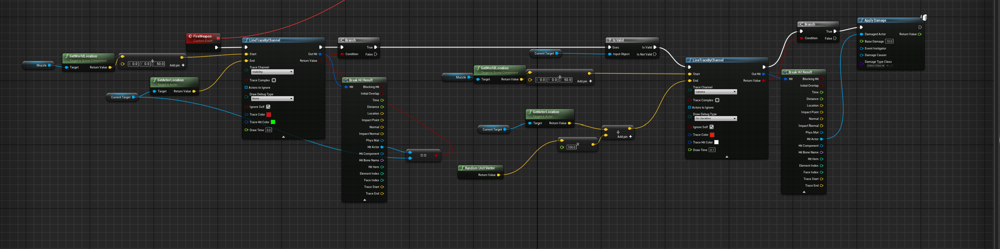

環境互動陷阱觸發機制
1. 機制設計目標
核心目標：採用「感應器（Trigger Sensor）與執行器（Trap Actuator）解耦」的介面設計，讓同一個壓力板或雷射絆線可以自由綁定多個機關（如落石、毒氣閥門或警報器），並同時對玩家與敵方 AI 生效，創造利用環境擊殺敵人的戰術深度。
2. 邏輯流程圖與引擎實作
stateDiagram-v2
[*] --> Armed: 關卡初始化
Armed --> Triggered: 偵測到 Pawn 進入碰撞盒
Triggered --> Active: 延遲 ActivationDelay 秒後釋放傷害
Active --> Cooldown: 機關動作完成
Cooldown --> Armed: 冷卻結束 (bIsReusable == true)
Cooldown --> Disabled: 一次性陷阱 (bIsReusable == false)

3. 關鍵參數設定表
| 參數名稱 | 資料型別 | 預設值 | 設計用途說明 |
|---|---|---|---|
ActivationDelay |
Float | 0.45 sec | 踩下機關到實際造成傷害前的音效／閃光預警時間 |
BaseDamage |
Float | 75.0 | 陷阱觸發時對範圍內目標造成的基礎物理傷害 |
CooldownDuration |
Float | 6.0 sec | 可重複觸發型陷阱重置回 Armed 狀態所需的冷卻秒數 |
bAffectAI |
Boolean | true | 是否允許敵方守衛觸發此機關（支援誘敵戰術） |
4. 測試與平衡性調整紀錄
- [v1.0] 連續重複觸發 Bug：角色在陷阱範圍內移動時每幀重複扣血 -> 導入狀態機鎖定機制，進入
Triggered後立即關閉碰撞檢測，直到重置回Armed。 - [v1.1] AI 無視陷阱路徑問題：守衛會直接踩進已啟動的火焰陷阱 -> 為陷阱加上動態
NavModifierVolume，啟動期間提高該區域尋路代價。